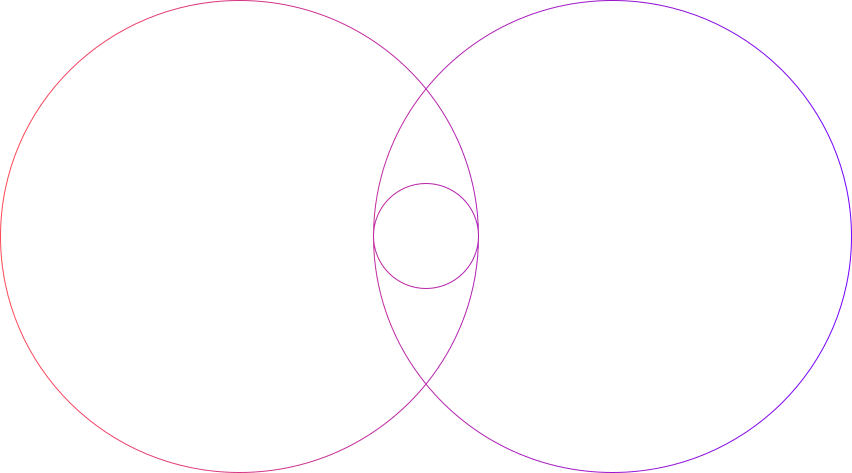
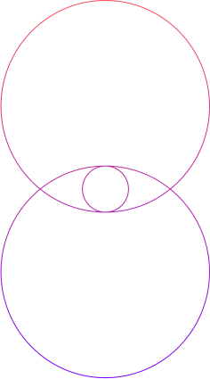

Brand inspired customer experiences driven by customer informed business intelligence.
Cultural trendspotting Customer strategy Brand planning Omnichannel creative Channel innovation


Brand-inspired customer experiences
Customer-informed business intelligence
Strategic consulting Analytics/ROI Data management Martech consulting Marketing automation
BInspiring brand desire in customers to build lifelong affinity and drive business impact.